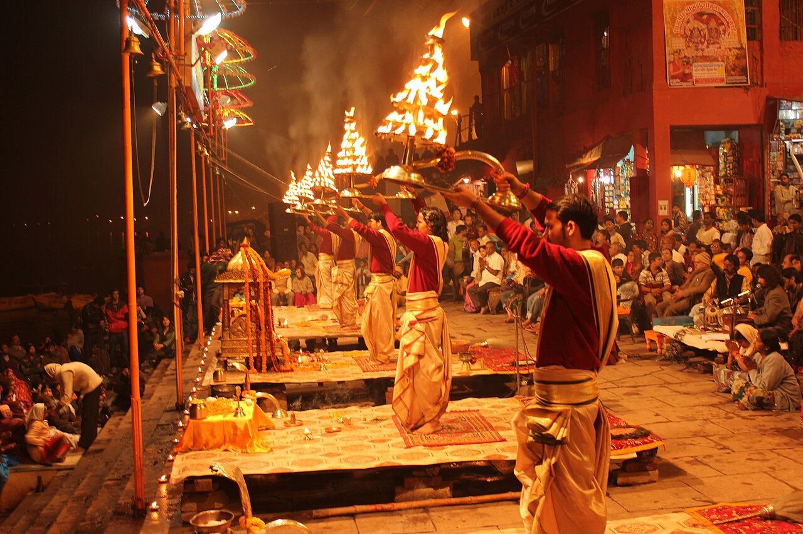

Top Attractions
Discover the must-visit places in Prayagraj
Triveni Sangam
The sacred confluence of three rivers - Ganga, Yamuna, and the mythical Saraswati. A major pilgrimage site and spiritual hub.
Allahabad Fort
A magnificent 16th-century Mughal fort built by Emperor Akbar, featuring stunning architecture and the Akshay Vat tree.
Kumbh mela
The world's largest religious gathering, held every 12 years. Experience the vibrant culture and spiritual energy.

Anand Bhavan
Historic ancestral home of the Nehru family, now a museum showcasing India's freedom struggle.

Khurso Bagh
A beautiful Mughal garden containing the tombs of Prince Khusrau and his family, showcasing Indo-Persian architecture.

Ganges Ghats
Experience the spiritual rituals, evening aarti ceremonies, and the serene beauty along the sacred riverbanks.